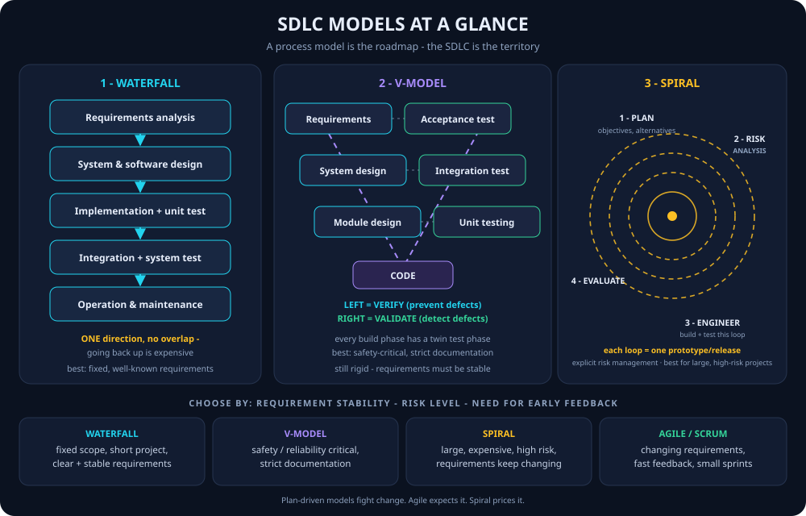
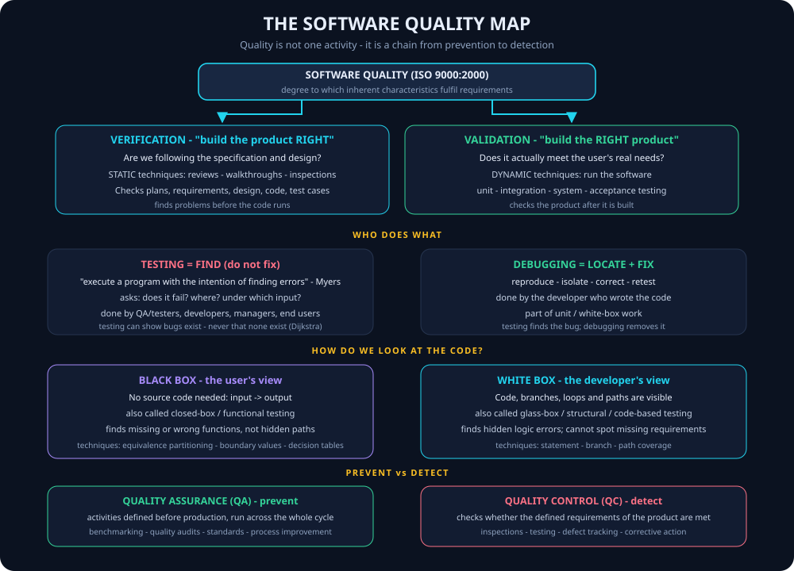
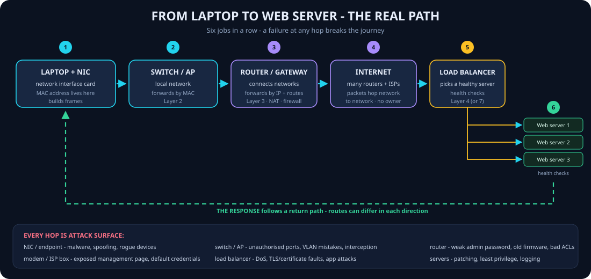
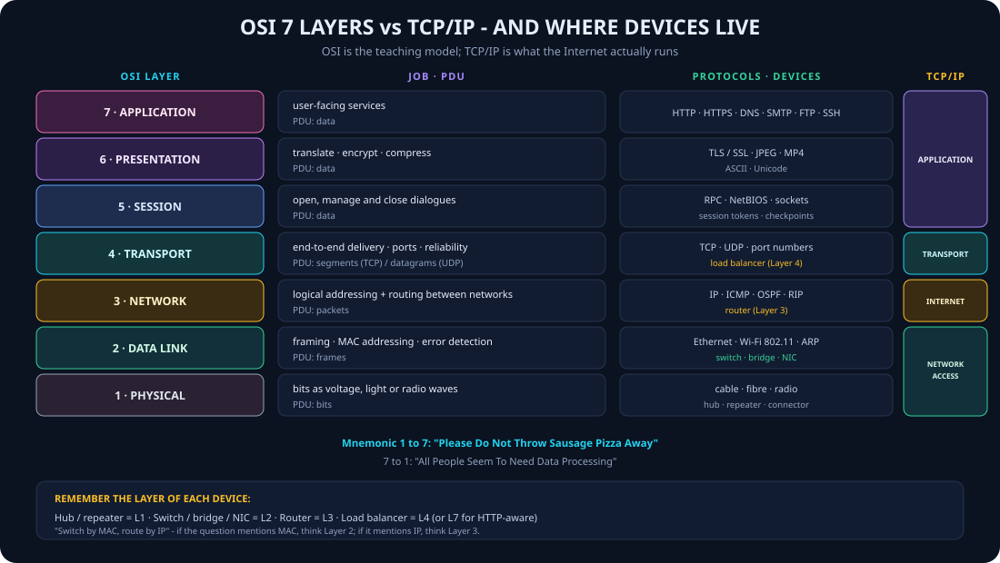

Dr. Zaki Masood · Information, Communication & Computer Fundamentals · Weeks 1–7
Three acronyms combine into one idea:
ICT = collecting, processing and storing data and transmitting/sharing it worldwide through networks, internet and telecommunication.
| Category | Examples |
|---|---|
| Hardware | Computers, smartphones, tablets, network devices |
| Software | Operating systems, office productivity, management tools |
| Communication | Gmail, Outlook, WhatsApp, Telegram, Zoom, Teams |
| Internet | Chrome, Firefox, Dropbox, Google Drive |
| Security | Antivirus: Norton, McAfee |
| Development | Visual Studio, VS Code, DevC++, Jupyter Notebook |
| Educational | LMS: Moodle, Blackboard · E-learning: Coursera, Khan Academy |
Students use ICT for: e-books & online libraries, educational apps (Duolingo, Wolfram Alpha), virtual classrooms, study groups, research (JSTOR, Google Scholar).
IT + CT = ICT. If an exam question defines one half, you can reconstruct the whole definition.
Name-drop JazzCash, Daraz, OLADOC, Sehat Kahani — Pakistani examples show real understanding.
Every ICT topic has a security angle: passwords, patches, privacy settings. Link them for bonus depth.
Examiners love the "balance" section — scheduled breaks, unplugging days, mindful usage.
Define ICT in one sentence.
↻ tapA combination of IT and CT — collecting, processing, storing data and transmitting it globally via networks and telecommunication.
Data vs Information?
↻ tapData = raw facts/figures, not meaningful alone. Information = processed, organized data useful for decisions.
Give three examples of ICT in healthcare.
↻ tapFitness tracking apps (Google Fit), telemedicine consults (OLADOC, Sehat Kahani), digital health records.
What is a digital detox?
↻ tapPlanned breaks from devices — scheduled screen-free times, unplugging days, non-digital hobbies, device-free family time.
Related lab: CS181L ICT Lab →
An electronic device that processes data to produce meaningful information. Key traits: Speed · Accuracy · Automation · Versatility.
| Component | Details |
|---|---|
| CPU | Brain: ALU (calculations), Control Unit (directs flow), Registers (ultra-fast temp storage) |
| Memory | Primary: RAM (volatile, active programs), ROM (firmware) · Secondary: HDD, SSD |
| Input | Keyboard, mouse, scanner |
| Output | Monitor, printer, speaker |
The system unit houses the motherboard, expansion slots/cards (network, graphics, storage).
| Gen | Technology | Example |
|---|---|---|
| 1st | Vacuum tubes — large, slow | Early calculators, Abacus, Pascaline, Analytical Engine |
| 2nd | Transistors — faster, smaller | IBM 1401 |
| 3rd | Integrated Circuits — reliable, compact | IBM 360 |
| 4th | Microprocessors — personal computers | Apple II, IBM PC |
| 5th | AI & parallel processing | Smart devices, quantum computers |
Everything is binary — bits (0s & 1s) physically stored as open/closed circuits, current presence/absence, or magnetic charge.
| System | Bits | Range | Used in |
|---|---|---|---|
| ASCII | 7–8 | 256 chars | Personal computers (English) |
| EBCDIC | 8 | Similar to ASCII | IBM mainframes |
| Unicode | 8–32 | 1M+ symbols | Web, modern OS — all world languages |
Remote/cloud storage: Google Drive, Dropbox, OneDrive, AWS S3 — accessible anywhere, auto-backup; concerns: security/privacy risks and internet dependency.
Example (2 + 3): fetch 2 → Register X · fetch 3 → Register Y · decode & execute ADD → 5 → Register Z → display result.
The system clock sends regular timing signals (like a heartbeat) — each tick = one cycle measured in Hz.
Software acting as the interface between user and hardware. Examples: Windows, Linux, macOS, Android, iOS.
| Function | What it manages |
|---|---|
| Process management | Scheduling & execution of tasks |
| Memory management | Allocates RAM to applications |
| File management | Organizes & controls access to data |
| Device management | Drivers for I/O devices |
| User interface | GUI or CLI for interaction |
| Security & access control | Passwords, permissions |
Vacuum → Transistor → IC → Microprocessor → AI. One keyword per generation is enough for MCQs.
Cache is fastest but smallest; HDD is slowest but biggest. Distance from CPU = speed.
Say it like a chant — it's the answer to half the machine-cycle questions.
RAM = working memory, forgets when power dies. ROM = permanent startup instructions.
For "which coding system supports all languages?" — always Unicode.
Multi = different jobs at once. Parallel = one job split across cores. Read the question twice.
Stages of the machine cycle?
↻ tapFetch → Decode → Execute → Store.
RAM vs ROM — key difference?
↻ tapRAM is volatile (contents lost when power off), stores active programs. ROM is non-volatile, stores firmware permanently.
What does the CPU's Control Unit do?
↻ tapDirects data flow and coordinates tasks within the CPU (ALU does calculations, registers store temporarily).
Name the 5 computer generations.
↻ tapVacuum tubes → Transistors → Integrated Circuits → Microprocessors → AI/Quantum/Cloud.
Related lab: CS181L ICT Lab →
0–9) · binary 2 (0,1 — bits) · octal 8 (0–7) · hex 16 (0–9,A–F where A–F = 10–15).Positional expansion: multiply each digit by bⁿ, with n counted from 0
at the right, then add. Works for every base.
| Conversion | Working | Result |
|---|---|---|
| 101011₂ | 1·2⁰+1·2¹+0·2²+1·2³+0·2⁴+1·2⁵ = 1+2+0+8+0+32 | 43₁₀ |
| 724₈ | 4·8⁰+2·8¹+7·8² = 4+16+448 | 468₁₀ |
| ABC₁₆ | C(12)·1 + B(11)·16 + A(10)·256 = 12+176+2560 | 2748₁₀ |
Repeatedly divide the integer part by the base; keep the remainders; the first remainder is the LSB → read remainders bottom-up. Fractions: multiply by the base, read integer parts top-down.
| Target | Working (division chain) | Result |
|---|---|---|
| 125₁₀ → bin | 125/2=62 r1 · 62/2=31 r0 · 31/2=15 r1 · 15/2=7 r1 · 7/2=3 r1 · 3/2=1 r1 · 1/2=0 r1 → read ↑ | 1111101₂ |
| 1234₁₀ → oct | repeated ÷8 → remainders 2,2,3,2 (read ↑) | 2322₈ |
| 1234₁₀ → hex | repeated ÷16 → remainders 2, 13(D), 4 (read ↑) | 4D2₁₆ |
| Conversion | Technique |
|---|---|
| Octal ↔ binary | each octal digit = 3 bits (group in threes from the right) |
| Hex ↔ binary | each hex digit = 4 bits (group in fours from the right) |
| Octal ↔ hex | go via binary — convert to bits, regroup |
| Binary op | 1-bit rules | Worked example |
|---|---|---|
| Addition | 0+0=0 · 0+1=1 · 1+0=1 · 1+1 = 10 (write 0, carry 1) | 10101 (21) + 11001 (25) = 101110 (46) — add columns, propagate carries |
| Multiplication | 0×0=0 · 0×1=0 · 1×0=0 · 1×1=1 | 1110 (14) × 1011 (11) = 10011010 (154) — partial product per multiplier bit, shift left, add |
101011₂ → decimal?
↻ tap43₁₀ — 32+8+2+1 (expand each bit × its power of 2).
125₁₀ → binary — read which way?
↻ tap1111101₂ — divide by 2 and read remainders bottom-up (first remainder = LSB).
Octal = ? bits · Hex = ? bits?
↻ tapOctal = 3 bits (triplets) · Hex = 4 bits (quads). Octal ↔ hex goes via binary.
k / M / G in computing?
↻ tap2¹⁰ (1024) · 2²⁰ · 2³⁰ — memory uses the base-2 meaning.
In binary, 1 + 1 = ?
↻ tap10 — write 0, carry 1 to the next column.
ABC₁₆ → decimal?
↻ tap2748₁₀ — A(10)×256 + B(11)×16 + C(12)×1 = 2560+176+12.
Related lab: CS181L ICT Lab → · Assignment practice: Assignment No. 1 (number systems, due 09 Oct)
Science studies the world by observation and experiment. Engineering applies science and maths to analyse, design, build, test and improve real-world solutions. Software engineering applies those engineering principles to the development, operation and maintenance of software systems.
Software is never built in isolation — every line of code sits inside a larger ecosystem of users, hardware, networks and business rules. SE covers the whole lifecycle, from the first requirement to retirement.
| Why SE is needed | What it controls |
|---|---|
| Complexity | Thousands of interacting parts, modules and people |
| Risk | Plan before building; fail cheaply on paper |
| Changing requirements | Customers discover what they want as they see it |
| Quality & reliability | Reviews, testing, standards |
| Long-term maintenance | Most lifetime cost comes after delivery |
Software = instructions + data structures + documentation. All three, not just code:
| Part | Meaning | Example |
|---|---|---|
| Instructions | Programs that provide features, functions and performance | app logic, main.cpp |
| Data structures | How the program stores and manipulates information | arrays, tables, databases |
| Documentation | Describes operation and use | user manual, API docs |
Four types: System (OS, drivers, utilities) · Application (Word, browsers, games) · Programming (compilers, IDEs, debuggers) · Malware (hostile — not a legitimate category; say so for the extra mark).
A process model is the roadmap that shows how those activities are organised — Waterfall, V-model, Spiral, Agile, incremental, iterative, evolutionary, prototyping.
SDLC = the process used by the software industry to design, develop and test high-quality software. Core phases: Plan → Requirements → Design → Implement → Test → Deploy → Maintain.
| Why SDLC matters | What it gives you |
|---|---|
| Improves software quality | Repeatable phases, reviews, test gates |
| Reduces risks and errors | Problems surface before they become expensive |
| Controls time and cost | Planned scope, budget and milestones |
| Ensures customer satisfaction | Requirements checked against delivery |
| Model | One-line idea | Best for |
|---|---|---|
| Waterfall | Linear sequence, no overlap | Fixed, clear, short projects |
| V-model | Waterfall + a test twin for every phase | Safety / reliability-critical work |
| Incremental | Deliver in pieces, each adding features | Early partial delivery |
| Iterative | Repeat and refine the same system | Evolving understanding |
| Evolutionary | Build, learn, evolve over many releases | Long-lived products |
| Prototyping | Build a prototype to clarify requirements | Unclear requirements, UI-heavy work |
| Spiral | Risk-driven loops | Large, expensive, high-risk projects |

How to read it: waterfall flows down only; the V-model folds the same phases up into matching tests; the spiral keeps looping outward, and every loop starts with risk.
| # | Phase | What happens |
|---|---|---|
| 1 | Requirements analysis & definition | Services, constraints and goals agreed with users → system specification |
| 2 | System & software design | Architecture (hardware/software/people/network split) + modules, classes, data structures, interfaces, algorithms |
| 3 | Implementation & unit testing | Design → code; each unit verified against its specification |
| 4 | Integration & system testing | Units integrated and tested as a complete system, then delivered |
| 5 | Operation & maintenance | Longest phase — fix errors, update features for new needs |
| ✅ Advantages | ❌ Disadvantages |
|---|---|
| Simple, easy to understand and use | Hard to accommodate change once underway |
| Easy to manage: deliverables + review per phase | Difficult to respond to changing requirements |
| Phases do not overlap — clean sign-off | No working software until late |
| Works for small projects with clear, fixed requirements | Not suitable for complex or long-term projects |
The V-model is a variation of waterfall drawn as a V. The left side verifies artefacts to prevent defects early; the bottom turns the approved design into code; the right side validates the running software.
| Development phase (left) | ↔ | Test phase (right) |
|---|---|---|
| Requirements analysis | ↔ | Acceptance testing |
| System / architecture design | ↔ | System testing |
| Module / detailed design | ↔ | Integration testing |
| Coding | → | Unit testing (bottom of the V) |
| ✅ Advantages | ❌ Disadvantages |
|---|---|
| Early defect prevention at every phase | Rigid — not flexible for change |
| Clear structure, well-defined deliverables | Changes costly once a phase is complete |
| Early test planning — from the requirements stage | No early prototype; software appears late |
| High quality assurance; easy to manage | Not for complex or evolving projects |
The spiral combines change avoidance with change tolerance: it assumes change comes from project risk and adds explicit risk-management activities. Its defining feature is the explicit recognition of risk; the system grows outward in loops until the final operational product is ready.
| Quadrant | Question |
|---|---|
| 1 · Objectives / alternatives | What are we trying to achieve? What options exist? |
| 2 · Risk analysis | What could go wrong? How do we reduce it? (the heart of the model) |
| 3 · Engineering | Build and test this loop’s version |
| 4 · Evaluation | Customer reviews it; plan the next loop |
| ✅ Advantages | ❌ Disadvantages |
|---|---|
| Reduces risk at every phase | Duration/budget hard to predict |
| Ideal for high-budget, complicated systems | More complicated to manage |
| Late requirement changes fit naturally | High cost — bad for small projects |
| Customers see working versions early | Success depends on accurate risk assessment |
| Continuous refinement improves reliability | Needs highly experienced professionals |
Agile = rapid and adaptive response to change, effective communication, the customer inside the team (no “us and them”), flexible planning, and incremental delivery of working software as fast as feasible.
| We value (left)… | …over (right) |
|---|---|
| Individuals and interactions | processes and tools |
| Working software | comprehensive documentation |
| Customer collaboration | contract negotiation |
| Responding to change | following a plan |
Scrum = 3 roles · 4 meetings · 3 artifacts — deliver working software after every sprint (1–4 weeks).
| 3 roles | 4 meetings | 3 artifacts |
|---|---|---|
| Product Owner (what + priority) Scrum Master (process, removes blockers) Scrum Team (builds it) |
Sprint & release planning Daily Scrum (15 min) Sprint Review Retrospective |
Product Backlog Sprint Backlog Impediments List |
| Criterion | Waterfall | V-model | Spiral | Agile / Scrum |
|---|---|---|---|---|
| Change tolerance | Very low | Low | High (risk loops) | Very high |
| Risk handling | Implicit | Verification-led | Explicit analysis | Continuous feedback |
| Working software | Late | Late | Early prototypes | Every sprint |
| Documentation | Heavy | Very heavy | Moderate–heavy | “Just enough” |
| Cost predictability | High | High | Low | Medium |
| Best size | Small | Small–medium | Large | Any, especially evolving |
| Scenario | Best model | Why |
|---|---|---|
| Bank payroll, rules fixed by law, short schedule | Waterfall | Stable, well-understood requirements |
| Medical device or aircraft control software | V-model | Safety + strict documentation + test twins |
| Satellite platform, huge budget, many unknowns | Spiral | Large, high-risk, evolving |
| Startup fitness app, weekly competitor releases | Agile / Scrum | Rapid change, need working software fast |
Software design specifies what the new system will look like and how it will work; a model is built before coding.
| Design output | What it contains |
|---|---|
| Data dictionary | All data in the system: names, types, sizes, relationships |
| DFD / class diagrams | Data movement between processes/stores, or classes + relationships (UML) |
| Input/output designs | Screens, forms, reports, validation rules |
| Cost/benefit analysis | Tangible (money, staff) + intangible (morale, brand, satisfaction) vs costs |
| Documentation | Design + specifications from the design phase |
PDLC tools: structure charts (program organisation/module hierarchy) and flowcharts (step-by-step data processing).
| Symbol | Shape | Meaning |
|---|---|---|
| Start / End | Oval | Terminal point |
| Input / Output | Parallelogram | Read data / display result |
| Process | Rectangle | Calculation or assignment |
| Decision | Diamond | Yes/No branch using relational operators (>, <, =, ≠, ≥, ≤) |
| Connector | Circle | Jump to another part of the chart |
| Flow | Arrow | Direction of control |
Three control structures: sequence (A → B → C) · selection (if/else diamond) · iteration (loop while a condition holds).
| Verification | Validation | |
|---|---|---|
| Question | “Are we building the product right?” | “Are we building the right product?” |
| Goal | Built according to requirements and design specs | Actually meets user needs; specs were correct |
| Evaluates | Plans, requirement specs, design specs, code, test cases | The actual product / software |
| Nature | Static — no execution | Dynamic — software is run |
| Activities | Reviews · walkthroughs · inspections | Unit · integration · system · (acceptance) testing |
| Cost | Cheap — defects caught early | More expensive — after the build |
| Testing | Debugging | |
|---|---|---|
| Job | Identify the defect without correcting it | Identify, isolate and fix it |
| Who | QA/testers, developers, managers, end users | The developer who wrote the code |
| Where | Every test level, through the lifecycle | After a failure — part of white-box/unit work |
| Output | Defect report / failed test | Corrected code + retest |
| Black-box testing | White-box testing | |
|---|---|---|
| Code knowledge | Not required — internal workings hidden | Full knowledge of code and structure |
| Focus | What it does: inputs → outputs | How it does it: logic, paths, loops |
| Other names | Closed-box, data-driven, functional | Glass-box, structural, code-based |
| Coverage | Least exhaustive, least time-consuming | Most exhaustive, most time-consuming |
| Algorithm testing | Not suited | Suited |
| Weakness | Hidden code errors; hard to locate the cause | Cannot spot missing requirements |
Test levels: Unit → Integration → System → Acceptance (UAT) — “small to big, then to the user.” Manual testing uses test plans/scenarios/cases; automation uses another tool (Selenium, coverage monitoring, load testing).

Read it top to bottom: quality splits into prevention (verification) and detection (validation); detection splits into finding (testing) and fixing (debugging); the method depends on whether you can see the code; and QA/QC are the process/product halves of the same idea.
ISO 9000:2000: quality = “the degree to which a set of inherent characteristics fulfils requirements.” Two practical definitions: conformance to requirements (processes/products meet written specs) and fitness for use (can be used as intended).
| Quality Assurance (QA) | Quality Control (QC) | |
|---|---|---|
| Approach | Prevent errors | Detect errors |
| When | Defined before production, across the whole cycle | Checks whether defined requirements are met |
| Focus | The process | The product |
| Examples | Benchmarking, quality audits, standards, training | Inspections, testing, defect tracking, corrective action |
Benchmarking = compare your practices/products with other projects to generate improvement ideas. Quality audit = structured review of quality activities to capture lessons learned.
People, Process, Product, Tools, Constraints — the full answer to “what affects SE success?”
One direction, no overlap, late software. Fixed requirements only.
Every build phase has a test twin. Requirements pair with acceptance testing.
If the question says “risk” or “large, expensive, evolving” — answer spiral.
3 roles, 4 meetings, 3 artifacts. Sprints deliver a working increment.
Testing finds, debugging fixes. QA prevents, QC detects.
What are the five factors of SE success?
↻ tapPeople · Process · Product · Tools & Technology · Project constraints (“3 P + T + C”).
Waterfall — which phase is the longest?
↻ tapOperation & maintenance — the system is in real use; errors fixed and features updated.
In the V-model, which test pairs with requirements?
↻ tapAcceptance testing — requirements ↔ acceptance, system design ↔ system test, module design ↔ integration test.
Which model makes risk an explicit phase?
↻ tapSpiral — every loop starts with risk analysis; best for large, high-risk, evolving projects.
Verification vs validation — one line each?
↻ tapVerification = build the product right (static: reviews). Validation = build the right product (dynamic: run it).
Testing vs debugging — who does which?
↻ tapTesting finds defects (QA/testers, users, developers). Debugging locates and fixes them (the developer).
QA vs QC — prevent or detect?
↻ tapQA prevents (process: benchmarking, audits, standards). QC detects (product: inspections, testing, defect tracking).
Scrum roles, meetings and artifacts?
↻ tap3-4-3: PO · Scrum Master · Team | planning · daily · review · retrospective | product backlog · sprint backlog · impediments.
Related lab: CS181L ICT Lab →
· Note: Week4-5_SoftwareEngineering_SDLC_Testing.md
A computer network is a group of interconnected devices that communicate and share data or resources.
Devices include computers, smartphones, servers, printers, cameras, sensors and security devices. Communication travels over wired media (Ethernet cable) or wireless media (Wi-Fi). Examples: home Wi-Fi, university network, banking network, the Internet.
| Type | Scope | Example |
|---|---|---|
| PAN | Personal, ~10 m | Bluetooth earbuds ↔ phone |
| LAN | Building / campus | University lab, home Wi-Fi |
| MAN | City | Cable network across Multan |
| WAN | Country / global | The Internet, bank branch network |
Data communication = the exchange of data between two or more devices through a communication medium. Devices must follow agreed rules so the information is understood correctly. Goals: accurate · timely · reliable.
| # | Component | Job | Smartphone example |
|---|---|---|---|
| 1 | Sender | Originates the data | Student’s smartphone |
| 2 | Receiver | Receives the data | Friend’s smartphone |
| 3 | Message | The information communicated | Text, image or file |
| 4 | Transmission medium | Path that carries the data | Wi-Fi / mobile network |
| 5 | Protocol | Rules that control communication | Network + app protocols |
In real networks, intermediate devices inspect, forward, route or balance traffic. Data is the meaning; a signal is its physical representation (voltage, light, radio); transmission is the signal’s journey.
A protocol is a set of rules that devices follow to communicate successfully. It defines how data is formatted, addressed, transmitted, received and interpreted. Without common rules, two devices may be physically connected but unable to communicate correctly.
| Protocol | Job | Everyday example |
|---|---|---|
| HTTP / HTTPS | Web communication (HTTPS encrypts) | Opening a website |
| TCP | Reliable transport: ordering + retransmission | File download, web page |
| UDP | Fast, connectionless transport | Live video, DNS, games |
| IP | Addressing + packet delivery between networks | Every Internet packet |
| Ethernet / Wi-Fi | Local network communication | Cable / wireless LAN |
| Mode | Direction | Both at once? | Example | Picture |
|---|---|---|---|---|
| Simplex | One way only | — | Keyboard → computer | One-way street |
| Half-duplex | Both ways, take turns | ❌ | Walkie-talkie | Single-lane bridge |
| Full-duplex | Both ways simultaneously | ✅ | Telephone / voice call | Dual carriageway |
Simplex: the receiver cannot send back through the same arrangement. Half-duplex: both can transmit but must take turns (“over”). Full-duplex: both transmit and receive at once — usually separate channels or echo cancellation.

Path chant: NIC → switch/AP → router → Internet → load balancer → server → back. The return route can differ from the outbound route.
| Device | Job | Key facts |
|---|---|---|
| NIC Network Interface Card/Controller |
Gives a device network connectivity | Ethernet or Wi-Fi · holds the MAC address · sends/receives frames. MAC is not strong authentication — visible and spoofable. |
| Modem MOdulator-DEModulator |
Converts between digital data and signals for a communication service | Connects local network to ISP/access network · cable, DSL, fibre (ONT) · home boxes combine modem + router + switch + AP · change default credentials. |
| Hub | Connects multiple Ethernet devices | Repeats frames to all ports — no intelligent forwarding · shared medium → unnecessary traffic · obsolete. |
| Bridge | Connects/segments LAN portions at the data-link layer | Reads MAC addresses · separates collision domains · a switch is essentially a multi-port bridge. |
| Device | Job | Key facts |
|---|---|---|
| Switch | Connects devices inside a LAN | Forwards Ethernet frames to the right port · learns a MAC address table · reduces traffic vs hub · managed switches add VLANs, port security, monitoring. |
| Router | Connects different networks | Forwards packets using IP + routing table · acts as gateway · home routers add NAT, firewall, DHCP, Wi-Fi · critical security boundary. |
| Load balancer | Distributes requests across servers | Prevents bottlenecks · improves performance, scalability, availability · health checks skip failed servers · may terminate TLS. |
| Device | Main job | Typical scope | Key idea |
|---|---|---|---|
| NIC | Connects a host to a network | Individual device | Network interface |
| Modem | Converts/conditions signals for access service | Access link | Modulation / demodulation |
| Switch | Forwards LAN frames | LAN | MAC addresses |
| Router | Forwards packets between networks | Multiple networks | IP / routing |
| Hub / distributor | Repeats signals to ports | Legacy LAN | No intelligent forwarding |
| Bridge | Connects LAN segments | LAN | MAC-based bridging |
| Load balancer | Distributes requests | Server / application environment | Availability & scaling |
| Device | Possible problems |
|---|---|
| Endpoint / NIC | Malware, unauthorised access, spoofing, insecure configuration |
| Switch | Unauthorised devices, VLAN misconfiguration, traffic interception attempts |
| Router | Weak passwords, outdated firmware, incorrect firewall/ACL rules, route manipulation |
| Modem / ISP equipment | Insecure administration, exposed management interfaces |
| Load balancer | Application attacks, configuration errors, TLS/certificate issues, denial of service |
| Servers | Missing patches, excessive privileges, weak logging |
General principle: every network device is part of the attack surface and should be securely configured, monitored and updated. Patch · password · permission · port — the four controls to mention for any device.
| Application | What it does | Examples / notes |
|---|---|---|
| The Internet | Global network of networks | Web, email, streaming, cloud |
| Telephone service | Voice communication | POTS (fixed line) · cellular (base stations/cells) · satellite phones · dual-mode (cellular + Wi-Fi calling) |
| TV & radio | One-to-many media distribution | Terrestrial, cable, satellite, IPTV |
| GPS | Satellites + receiver determine exact location | Navigation · surveyors, farmers, fishermen · vehicle guidance · military · geocaching |
| Monitoring systems | Status or location of people, vehicles, assets | RFID (object status) · GPS monitoring (location) · medical/home-health monitors · sensor networks |
| Multimedia networking | Distributes digital multimedia over a home/local network | Sharing across TVs/phones/computers · streaming/casting |
| Videoconferencing | Face-to-face meetings over a network | Online conferencing · telepresence |
| Collaborative computing | Workgroup computing | Shared docs, screens, tasks (Teams, Workspace) |
| Telecommuting | Working remotely over the network | VPN + video + cloud apps |
| Telemedicine | Medical information and services over networks | Remote monitoring/consultation · diagnosis · telesurgery (robot-assisted) · space exploration |
OSI is the ISO’s 7-layer reference model (1984) for systems interconnection. It is the teaching model; TCP/IP is what the Internet actually runs. Learn the layers, then attach one device to each.
| # | Layer | Job | PDU | Protocols / devices |
|---|---|---|---|---|
| 7 | Application | User-facing services | data | HTTP, HTTPS, DNS, SMTP, FTP, SSH |
| 6 | Presentation | Translate, encrypt, compress | data | TLS/SSL, JPEG, MP4, ASCII/Unicode |
| 5 | Session | Open/manage/close dialogues | data | RPC, NetBIOS, sockets |
| 4 | Transport | End-to-end delivery, ports, reliability | segments | TCP, UDP · load balancer (L4) |
| 3 | Network | Logical addressing + routing | packets | IP, ICMP, OSPF, RIP · router |
| 2 | Data Link | Framing, MAC, error detection | frames | Ethernet, Wi-Fi, ARP · switch, bridge, NIC |
| 1 | Physical | Bits as voltage/light/radio | bits | Cable, fibre, radio · hub, repeater |
TCP/IP 4 layers: Application (OSI 5–7) · Transport (4) · Internet (3) · Network Access (1–2).

One-line summary: hub/repeater L1 · switch/bridge/NIC L2 · router L3 · load balancer L4 or L7.
Sender, Receiver, Message, Medium, Protocol — the 5 components in order.
Simplex = one-way street · half-duplex = single-lane bridge · full-duplex = dual carriageway.
Switch stays inside the LAN with MAC. Router connects networks with IP.
Hub repeats to everyone; switch forwards only to the right port.
Hub L1 · switch/bridge/NIC L2 · router L3 · load balancer L4/L7.
Patch, password, permission, port — and map each threat to C-I-A.
Five components of data communication?
↻ tapSender · Receiver · Message · Transmission medium · Protocol (S-R-M-M-P).
Walkie-talkie is which duplex mode?
↻ tapHalf-duplex — both sides can transmit, but only one at a time.
Switch vs router — addressing?
↻ tapSwitch = MAC addresses, frames, inside a LAN. Router = IP addresses, packets, between networks.
What does a modem actually do?
↻ tapModulates/demodulates — converts digital data to signals for the ISP/access link and back.
Why use a load balancer?
↻ tapDistributes requests across servers, does health checks, improves performance, scalability and availability.
Which device works at Layer 2?
↻ tapSwitch, bridge and NIC — they deal with frames and MAC addresses. Hub = L1, router = L3.
What are the three goals of data communication?
↻ tapAccurate, timely and reliable delivery (A-T-R).
Name the 7 OSI layers, top to bottom.
↻ tapApplication · Presentation · Session · Transport · Network · Data Link · Physical (“All People Seem To Need Data Processing”).
Related lab: CS181L ICT Lab →
· Note: Week6-7_ComputerNetworks_DataComm_Devices.md
No pre-requisites. History of computing → number systems → software engineering → networks → AI → databases → full web stack (HTML/CSS/JS) → WordPress → AWS/DevOps.
| CLO | Outcome | BT |
|---|---|---|
| CLO-1 | Understand the basics of information & communication technologies | C2 Understand |
| CLO-2 | Solve number-system conversions & arithmetic operations | C3 Apply |
| CLO-3 | Apply SDLC, modern web languages, media, architectures & tools | C3 Apply |
History of computers · definition · hardware parts · types (super/mainframe/mini/micro) · data representation
Processor, memory, word size · machine cycle & system clock · storage · I/O devices · OS: multitasking, multithreading, multiprocessing
Number systems & conversions: binary ↔ decimal ↔ octal ↔ hexadecimal · arithmetic operations
Application & system software · SDLC phases · flowcharts · system design · testing & QA
Data communication model & transmission · modems, routers, switches, load balancers, bridges, NIC
Digital/analog · async/sync · simplex/half/full duplex · media · protocols · topologies · OSI model · types of networks
Intro · AR · VR · Metaverse/blockchain · problem solving & search · knowledge representation · ML · neural networks & deep learning · NLP · reinforcement learning · ethics & bias · future trends
SQL · NoSQL · MS Access
Covers weeks 1–8
Ports, URL/URI, HTTP · internet security & privacy · web servers · cloud & virtualization · DNS/FTP/CDN · HTML elements & attributes · front/back-end frameworks
Frameworks: Bootstrap, Material UI, Ant, Tailwind · syntax, selectors, class, ID, pseudo-classes, pseudo-elements
Preprocessors · cross-browser compatibility · responsive web design · progressive web design
JS · ES6+ · libraries · control flow & functions · SOAP, JSON, BSON, REST
DOM · BOM · async/sync · browser & Fetch APIs · web storage & cookies · dev tools · JS security
Dashboard · creating & managing content · plugins & widgets · performance, security & SEO
Introduction to AWS · DevOps basics